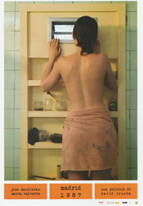

Madrid, 1987
Verano de 1987.
La radio del estudio de un pintor desgrana las noticias del día. Informan que el portavoz del gobierno, Javier Solana debe aclarar que Barrionuevo no puso nunca en cuestión que la lucha antiterrorista tuviera que hacerse dentro del marco constitucional, para a continuación informar de que Gerardo Iglesias plantea que podrá discutirse en el Congreso del Partido Comunista todos sus postulados excepto su carácter marxista, comunista y revolucionario.
Se informa también de la revisión de la sentencia de los procesados por el 23-F que continúan en prisión, lo que podría suponer una reducción de sus penas.
A nivel internacional informan de la concesión por parte del Consejo de Estado de la RDA de una amnistía general y de la abolición de la pena de muerte.
En los anuncios, Cambio 16 invita a leer una entrevista al nuevo "mesías" del fútbol español, Jesús Gil y Gil.
En un café del centro, Miguel, un articulista escribe con su máquina su siguiente columna, mientras el camarero le anuncia que será un día bochornoso.
Poco después aparece una muchacha, Ángela, que desea que revise un trabajo que ha hecho sobre él para una asignatura que había suspendido.
Él de inmediato le tira los tejos mientras le dice que es demasiado largo y que tiene demasiados tópicos, aunque le dice que tiene madera de periodista.
Le pregunta tras ello si tiene prisa y le pide que busque en los bolsillos de su chaqueta, de la que saca unas llaves, que le dice que son del apartamento de un amigo pintor y donde espera pasar las dos horas siguientes conociéndose mejor
Una vez en el estudio de su amigo Ángela curiosea los cuadros de este mientras Miguel sirve unos whiskys afirmando que envidia a los pintores que pueden expresarse sin palabras, para a continuación acariciar y besar a Ángela, que no parece sentirse cómoda con la situación.
Tras ello Miguel le pide a la muchacha que se desnude para él a lo que se niega, preguntándole él si cuando accedió a ir al piso con él se esperaba otra cosa.
La ve marcharse mientras él se termina su copa y su cigarrillo, aunque poco después aparece la muchacha sin pantalones y con la camisa desabrochada, pidiéndole él que se siente a su lado en la cama, tras lo cual acaricia su cara y su pecho, para, a continuación coger pintura de su amigo pintando con su dedo varias rayas de azul a lo largo del contorno de su pecho, haciéndolo luego en su espalda cuando ella se levanta para quitarse la pintura.
Tras decirle que está loco se dirige a la ducha, comenzando a desnucarse él mientras la observa ducharse, desnudándose y metiéndose en la ducha cuando sale ella, aunque cuando lo hace, Ángela le dice que se va a marchar, ya que se siente muy rara allí, a lo que él le dice que eso es peor que una ducha de agua fría, aunque cuando intenta abrir la puerta del baño se encuentra con que esta se ha quedado cerrada y no pueden abrirla desde dentro, encontrándose ambos encerrados y desnudos sin que, pese a todos sus esfuerzos, la puerta se abra.
Tras observar que hay un pequeño ventanuco en la parte de arriba ella empieza a gritar tratando de conseguir que alguien la escuche y les ayude, ya que, tal como le cuenta Miguel, Luis no volverá hasta el lunes.
Obligados a permanecer en ese pequeño entorno, comienzan a hablar, contándole ella que su padre es un hombre de los de antes, y al darle su nombre, Soriano Castroviejo, un militar, Miguel se da cuenta de que Ángela es hermana de Isabel, a la que conoció años antes cuando aquella formaba parte de un grupo de teatro.
Ángela le cuenta, que su hermana le había hablado de él y le había dicho que era un escritor sobrevalorado, y que sus novelas no tuvieron la repercusión de sus artículos.
Miguel recuerda, mientras comienza a echar de menos el whisky y el tabaco, que él tuvo varios juicios por ofensas a los militares, y que en ocasiones le tuvieron bajo vigilancia.
Le pregunta tras ello por qué desea ser periodista, si ya pasó todo lo interesante, a lo que ella le responde que no quiere ser periodista, sino escribir.
Miguel trata de convencerla de nuevo de que en esas circunstancias tendrían que hacer el amor, aunque ella le dice que no desea hacerlo, preguntándose él, qué es lo que pensaba sacar de él en su entrevista, ya que, él reconoce abiertamente, su único interés al aceptar que lo hiciera era precisamente para conseguir acostarse con ella.
Ángela rompe a llorar al verse así sin salida, tratando también de Miguel de conseguir, sin éxito, dada la poca gente que hay en Madrid por las vacaciones, de tratar de llamar la atención de alguien.
Poco después hablan sobre novelas, y los gustos de ella - Capote y los latinoamericanos - diciendo él que según se avanza en edad empiezan a gustar las cosas más sencillas, pues ya te has dado cuenta de que no puedes volar.
Él reflexiona más tarde sobre lo que les espera. Un escándalo del que los compañeros que le odian se aprovecharán, así como del sentimiento del padre de ella, que quizá piense que debe matarlo, o del de su esposa que quizá lo abandone y se divorcie, y todos se imaginarán lo ocurrido allí durante tanto tiempo y que no podrán decir la verdad para no quedar en ridículo.
Tras ello la besa, no impidiéndoselo ella, que da un paso adelante y hacen el amor.
Tras ello charlan sentados en la bañera, ahora sobre el tema que a ella le interesaba. Sobre el estilo, del que, Miguel asegura, es mejor carecer, ante lo que Angela le responde que pese a lo que dice él tiene un estilo y que cuando lee algo suyo sabe que es suyo, respondiendo él que si lo tiene es por agotamiento tras haber escrito tantos años.
Le dice después que los jóvenes se sobrevaloran, asegurándole que no es posible cambiar el mundo con un escrito, ante lo que ella reacciona diciéndole estar harta de que los mayores le digan constantemente lo que deben hacer o pensar y que constantemente les muestran su cinismo y una pose de superioridad y que no es tan ingenua como para pensar que echando un polvo, él iba a conseguirle un trabajo de prácticas en su periódico.
Por otra parte, él habla demasiado de la edad, pero si no estuvieran encerrados, él ya se habría marchado con cualquier excusa.
Tratando de pasar el rato, Miguel le pide que se imagine una película que él le va narrando, sobre un hombre que llega a su casa del trabajo de madrugada y desayuna con su mujer, que se va a ir a trabajar en ese momento.
El hombre se encuentra con que su hijo adolescente no desea levantarse, y pese a todos los intentos del padre de convencerlo no lo consigue.
Cuando se levanta al mediodía, ve que su mujer le está dando de comer en la cama y él decide no dejarle que lo haga, pese a lo cual al día siguiente ocurre lo mismo, por lo que va a visitarlos un psicólogo que les pide que hagan vida normal, mientras que otro médico les aconseja hospitalizarlo, aunque ellos prefieren tenerlo en casa.
El padre compra una camioneta en la que cargará la cama, yendo de ese modo de vacaciones, entre la expectación general, que lleva a una chica a enamorarse de él y besarlo, sin conseguir pese a ello convencerlo de que se levanta, acabando ella también metida en la cama.
La gente del pueblo empieza a tener miedo después de eso y les obligan a marcharse, decidiendo viajar hasta París.
En esa ciudad, el padre se siente feliz, y se adentra en el bosque con su esposa para hacer el amor, descubriendo la madre al volver a la furgoneta que la cama está vacía.
Empiezan a buscar al chico por toda la ciudad, mientras el padre trata de consolarse pensando que por lo menos se ha levantado, aunque la madre piensa, por el contrario, que quizá sería mejor que estuviera en la cama.
Mientras le cuenta la historia y ya por la mañana escuchan un ruido y Miguel sube hasta la ventana, pidiéndole a un muchacho que llame por teléfono al dueño del piso, prometiéndole a cambio una propina de 1.000 pesetas.
Ella empieza a preocuparse entonces por lo que les dirá a los padres, que la matarán, mientras él le dice que tiene un fuerte sentimiento de culpa.
Llega entonces su amigo y les abre, excusándose por haberse olvidado de avisarle de que no cerrara el baño.
Ángela se viste y se marcha de inmediato, mientras Miguel le confirma a su amigo que le utilizará como coartada, observando que en su precipitación Ángela se dejó las gafas, un libro y su carpeta, en la que Miguel ve algunos artículos de prensa recortados, y entre ellos una de sus columnas.